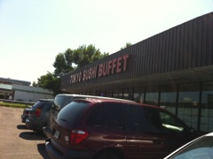

August 20, 2011
Today was the start of our vacation adventure. As usual Hope wanted to leave early at 9:30AM and we wound up getting on the road at 11:30. Hope stayed up late with Brandon doing up last minute laundry so it could be packed.
Thanks to Brad at work I got my iPhone attached to the windshield with a new Navigation app (Telenav) and I set up Pandora with a new playlist that had samples of songs that everyone likes. We listened to that the whole way. It was great not having to worry about finding a new station every 40-50 miles.
The trip was pretty uneventful. We took I-90 to exit 39 and took I-690 to I-81 down to Binghamton. We stopped at Hope's dads so we could drop some bags off to him as he is going to bring it for us to the cottage when we see him on Wednesday.
After leaving her dads we went to the Tokyo Sushi Buffet down the road. Larry and I stopped here once on our way to New Jersey for a work meeting and I thought it was really good sushi for a buffet. The kids liked it and I think Hope liked it as well.
After lunch we headed back up north on route I-88 to see some more of Hope's family. We're spending the night at Hopes cousins and visiting with her aunt and grandma.
Had a nice dinner of Cheeseburgers, corn on the cob, pasta salad and beer.
I got to get some work done tonight and send some emails then I'll be done for the week.
blog comments powered by Disqus